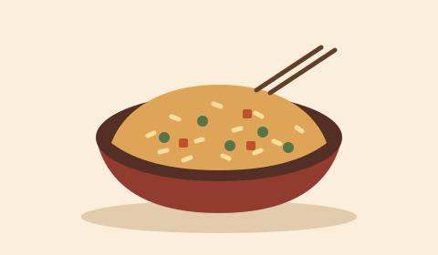

Chaw Fan
$25.000

Explorá nuestros platos tradicionales de comida china.
Hay sabores que te hacen cerrar los ojos y volver a un lugar donde fuiste feliz. A una cocina llena de aromas, a una voz que te llama a comer, a una mesa donde siempre había lugar para vos.
En Chaw Fan queremos compartir ese sentimiento a través de la cocina china: platos al centro, un poquito de todo para cada uno y el cariño de recibirte como en casa. Cocinamos para que disfrutes cada bocado y, entre sabores y charlas, te lleves un recuerdo lindo de nuestra mesa.
Estos son algunos de los platos que encontrás en nuestra carta.
$25.000
$35.000
$19.500

Consultá nuestras promociones de martes a jueves para consumo en el salón.